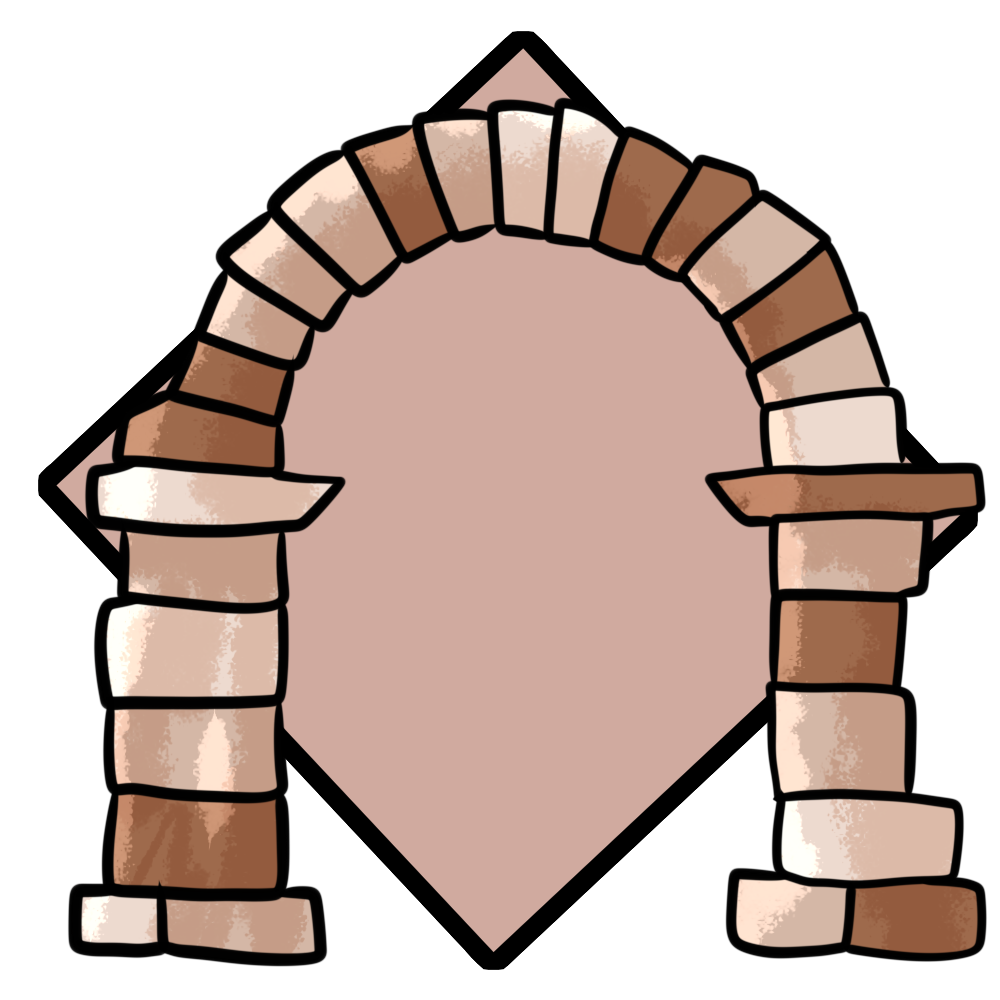

An old arch of an old civilization.

A crumbling piece of stone, suggesting the instability of these ruins.
A cracked pillar, once magnificent.
In the Sandblown Ruins is a common spot for drifters and travelers to rest for a night.